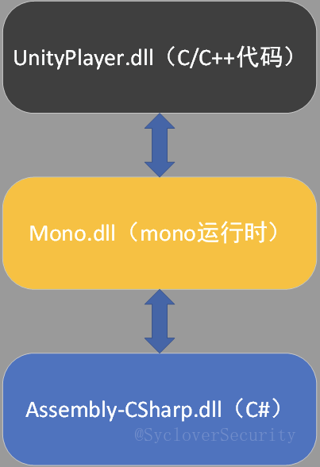

将注入进行到底:利用Mono注入C#游戏脚本
Author: 01dTan9@SycloverSecurity
目录
1. 游戏脚本是什么？
脚本语言（英语：Scripting language）是为了缩短传统的“编写、编译、链接、运行”（edit-compile-link-run）过程而创建的计算机编程语言。早期的脚本语言经常被称为批处理语言或工作控制语言。一个脚本通常是解释运行而非编译。
游戏脚本由于脚本语言的开发成本低，许多游戏引擎不约而同地使用了脚本语言作为主要编程语言，比如大名鼎鼎的《魔兽世界》，就是使用的Lua进行开发的。本文所描述的游戏脚本是Unity（游戏引擎）中使用的主要编程语言——C#，并且Unity提供C＃中的主要脚本API ，其脚本具有简单、易学、易用的特性，目的就是希望能让开发人员快速完成游戏开发。
2. 为什么要注入游戏脚本？
2.1传统注入方式
对于传统的第三方游戏插件开发而言，由于没有游戏厂商提供的官方接口，只能通过非常规的方式将插件的功能安装在游戏中。
通常来说，这些安装的方式与病毒的行为十分类似，更偏向于系统底层，比如利用Windows API修改目标进程中的数据，或者创建远程线程让目标进程执行汇编代码或加载第三方库（如DLL），更有甚者，直接在Windows内核中劫持目标进程网络通讯，或进行APC注入。
目前传统的应用层注入方式主要有以下几种：
静态注入类：
- 导入表注入
- 注册表注入
- DLL劫持注入
动态注入类：
- 钩子注入
- APC注入
- 远程线程注入
- 输入法注入
- LSP注入
使用上述方法安装的插件，其功能实现大部分要靠硬编码、钩子、内存修改来实现。这样一来，需要耗费大量的时间分析游戏的汇编代码与通过内存中的数据来构建结构体与游戏对象。
2.2从硬编码注入到脚本注入
假如我们可以让游戏脚本在游戏中执行，通过脚本直接使用游戏引擎封装好的函数与对象，不就可以事半功倍了吗？
3. Mono 与 Unity 下的C#游戏脚本
3.1 Unity3D
Unity3D是由Unity Technol
ogies开发的一个让玩家轻松创建诸如三维视频游戏、建筑可视化、实时三维动画等类型互动内容的多平台的综合型游戏开发工具，是一个全面整合的专业游戏引擎。Unity使用户能够以2D和3D方式创建游戏，并且引擎提供C＃中的主要脚本API ，用于插件形式的Unity编辑器，游戏本身以及拖放功能。在 C＃作为引擎使用的主要编程语言之前，Unity支持 Boo 和 JavaScript 版本的 UnityScript。
3.2 Mono
Mono是一个免费的开源项目。由微软的子公司Xamarin（前身为Novell，最初由Ximian）和.NET基金会领导。旨在构建符合ECMA（欧洲计算机制造商协会）标准的.NET Framework兼容工具集。包括 C＃编译器和带有实时（JIT）编译的公共语言运行时。
3.3 Mono和Unity3D
简单来说，Mono是Unity3D的一个运行时，负责C/C++和C#/CIL的交互。
举个例子，随便打开一个Unity游戏的根目录，你会发现一个名为UnityPlayer.dll的动态链接库，这个动态链接库封装是Unity的底层C++代码。
在 游戏根目录\Mono\EmbedRuntime\ （某些低版本Unity游戏目录为游戏根目录\Mono\,笔者的为 2018.2.0 Beta）下有一个名为mono.dll的动态链接库，这个便是负责C/C++和C#/CIL的交互的模块，网上有开源版本，但许多游戏公司为了防止游戏被恶意修改，通常都重新编译mono.dll，在其中加入加密游戏数据与检测恶意行为的代码。
在游戏根目录\游戏名_Data\Managed\中名为Assembly-CSharp.dll的文件便是C#脚本代码。
三者的关系如下：

4.如何利用 Mono平台实现 游戏脚本注入？
利用Mono平台实现游戏脚本注入的主要方法有两种，一种是静态修改，直接PatchAssembly-CSharp.dll的代码。
本文测试环境是在Windows下，主要是阐述思路，Android平台的注入同理。
另一种是调用mono.dll的API，动态加载C#代码（移动端同理），本文主要讨论后者。代码实现主要由三部分组成：
C#库文件（负责实现第三方功能）
动态链接库（用于在目标程序加载脚本）
主程序（负责注入DLL到目标程序）
4.1 C#库文件
负责实现第三方功能，代码需要因游戏而定，主要是通过获取或修改Unity原生组件（Transform、physics等）的数据实现第三方功能，也可以直接使用开发者定义的函数，但这种方法需要获取游戏源代码，需要解密脚本文件，在此不再赘述。
4.2 动态链接库
在目标进程中载入C#脚本需要以下API，具体参数查阅mono官方文档，上面都有详细解释。
通过文件名加载C#脚本文件镜像。
mono_image_open_from_data
从文件镜像中读取并将C#代码编译为IL代码，至此，C#代码被即时编译完毕。
mono_assembly_load_from_full
获取IL代码的镜像。
mono_assembly_get_image
通过类名获取类句柄，供mono_class_get_method_from_name调用。
mono_class_from_name
通过类句柄和函数名获取函数地址，供mono_runtime_invoke调用。
mono_class_get_method_from_name
通过函数地址运行IL代码，代码开始运行。
mono_runtime_invoke
在调用mono的API之前，我们需要获取API的函数地址，基本方法如下：
首先获取mono.dll的模块句柄
HMODULE hMono = GetModuleHandle(L"mono.dll");
再获取API地址
typedef void* (__cdecl *MONO_IMAGE_OPEN_FROM_DATA)(char *ImageName);
MONO_IMAGE_OPEN_FROM_DATA mono_image_open_from_data;
mono_image_open_from_data = (MONO_IMAGE_OPEN_FROM_DATA)GetProcAddress(hMono, "mono_image_open_from_data");
用这种方法获取所有需要调用的API
加载C#脚本代码
#define ClassName L"ClassName"
#define MethodName L"MethodName"
#define name_space L"name_space"
intptr_t raw_image = ImageOpenFromDataFull(file_data);
intptr_t assembly = AssemblyLoadFromFull(raw_image);
intptr_t image = AssemblyGetImage(assembly);
intptr_t class_id = GetClassFromName(image, name_space, ClassName);
intptr_t method = GetMethodFromName(class_id, MethodName);
RuntimeInvokeMethod(method);
还可以在DLL中实现C#热更新，方便调试。
4.3 主程序
主程序负责将动态链接库注入到目标程序。
通过上文提到的远程线程注入方法
使用 CreateRemoteThread 远程调用 LoadLibrary 即可。
5. 脚本注入攻防思路
5.1 如何对抗脚本注入（Anti-Cheat）？
对抗脚本注入，有以下几种、主要思路是在mono.dll上做手脚。
当前流行的方法通过修改mono源码，加密Assembly-CSharp.dll，并在mono_image_open_from_data里加入解密脚本的函数，这样既可以防止脚本被静态Patch，又可以防止动态注入。
Android平台下的进程保护
Windows平台下的进程保护（R0、R3）
另外一种是在其他mono函数加入检测代码。笔者所遇到便是在mono_class_from_name加入检测代码，非原生脚本的加载都会导致函数调用崩溃。
5.2 如何绕过防注入（By Pass）？
利用没有被修改的函数加载代码，如mono_assembly_foreach枚举IL代码镜像，绕过mono_class_from_name的检测。
重写mono_class_from_name函数。
加载另一个纯净的mono.dll，使用纯净模块里面的函数来加载代码。
6.总结
利用mono平台注入C#代码大大提高了开发效率，如果是单纯用原生Unity组件开发出来的代码基本上适用于所有用Unity引擎开发的游戏。
未来Unity可能会放弃mono平台，转用LICPP平台，但是短时间内是不会放弃mono这个成熟的平台的，所以，本方法在未来一段时间内都有利用价值。